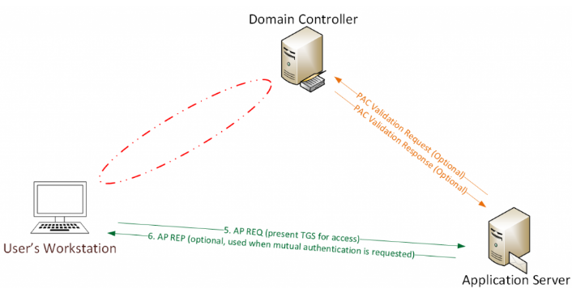

Typical Kerberos Authentication Flow:
User logs on with username & password.
1a. Password converted to NTLM hash, a timestamp is encrypted with the hash and sent to the KDC as an authenticator in the authentication ticket (TGT) request (AS-REQ).
1b. The Domain Controller (KDC) checks user information (logon restrictions, group membership, etc) & creates Ticket-Granting Ticket (TGT).
2. The TGT is encrypted, signed, & delivered to the user (AS-REP). Only the Kerberos service (KRBTGT) in the domain can open and read TGT data.
3. The User presents the TGT to the DC when requesting a Ticket Granting Service (TGS) ticket (TGS-REQ). The DC opens the TGT & validates PAC checksum – If the DC can open the ticket & the checksum check out, TGT = valid. The data in the TGT is effectively copied to create the TGS ticket.
4. The TGS is encrypted using the target service accounts’ NTLM password hash and sent to the user (TGS-REP).
5.The user connects to the server hosting the service on the appropriate port & presents the TGS (AP-REQ). The service opens the TGS ticket using its NTLM password hash.
Silver Ticket Overview:
Silver Tickets are forged Kerberos Ticket Granting Service (TGS) tickets, also called service tickets.
As shown in the following graphic, there is no AS-REQ / AS-REP (steps 1 & 2) and no TGS-REQ / TGS-REP (steps 3 & 4) communication with the Domain Controller. Since a Silver Ticket is a forged TGS, there is no communication with a Domain Controller.
- The Kerberos Silver Ticket is a valid Ticket Granting Service (TGS) Kerberos ticket since it is encrypted/signed by the service account configured with a Service Principal Name for each server the Kerberos-authenticating service runs on.
- While a Golden ticket is a forged TGT valid for gaining access to any Kerberos service, the silver ticket is a forged TGS. This means the Silver Ticket scope is limited to whatever service is targeted on a specific server.
- While a Golden ticket is encrypted/signed with the domain Kerberos service account (KRBTGT), a Silver Ticket is encrypted/signed by the service account (computer account credential extracted from the computer’s local SAM or service account credential).
- Most services don’t validate the PAC (by sending the PAC checksum to the Domain Controller for PAC validation), so a valid TGS generated with the service account password hash can include a PAC that is entirely fictitious – even claiming the user is a Domain Admin without challenge or correction.
- The attacker needs the service account password hash
- TGS is forged, so no associated TGT, meaning the DC is never contacted.
- Any event logs are on the targeted server.